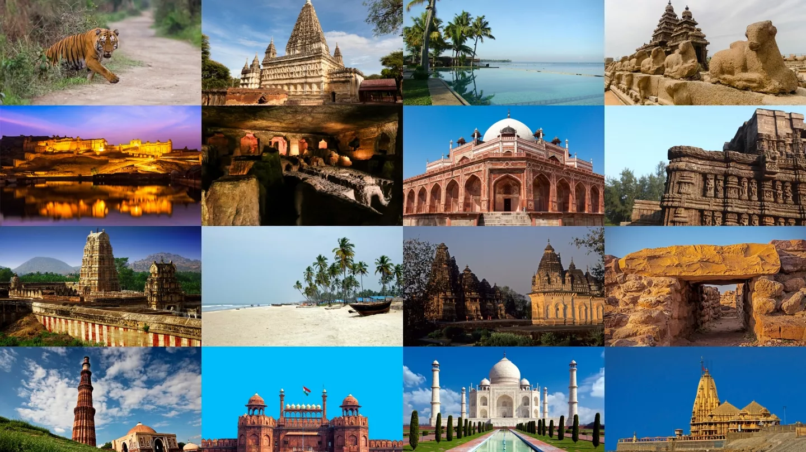

Indian Tourism
Taj Mahal
Periya Kovil

Red Fort

Howrah Bridge
The Majestic Taj Mahal
The Taj Mahal, located in Agra, India,
is one of the most magnificent architectural
wonders in the world.
Built by Mughal Emperor Shah Jahan in memory of his beloved wife Mumtaz Mahal,
it symbolizes eternal love and devotion.
Constructed in the 17th century,
this white marble mausoleum is an architectural masterpiece, blending Persian, Islamic, and Indian styles.
The intricate carvings, calligraphy, and the grand central dome make it a breathtaking sight.
The Taj Mahal stands on the banks of the Yamuna River, surrounded by lush gardens and reflecting pools
that enhance its beauty.
Recognized as a UNESCO World Heritage Site, the Taj Mahal attracts millions of visitors each year,
making it one of the most iconic landmarks in the world.
Whether viewed at sunrise, sunset, or under the moonlight,
its beauty remains timeless and awe-inspiring.